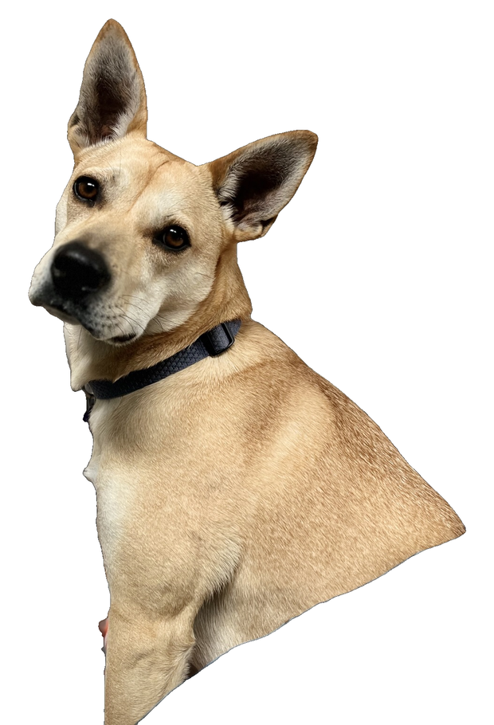

Stickermine
Turn quick screenshots into fun
stickers that live on your desktop.
Download for Mac
v1.0 · 12 MB · macOS 14+ · Free
brew install --cask stickermine
[DEMO VIDEO · about 10 sec loop: capture, style, stick]
© Stickermine
GitHub
Privacy
Contact
☕️ Buy me a coffee
Make your desktop make you smile!
